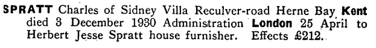
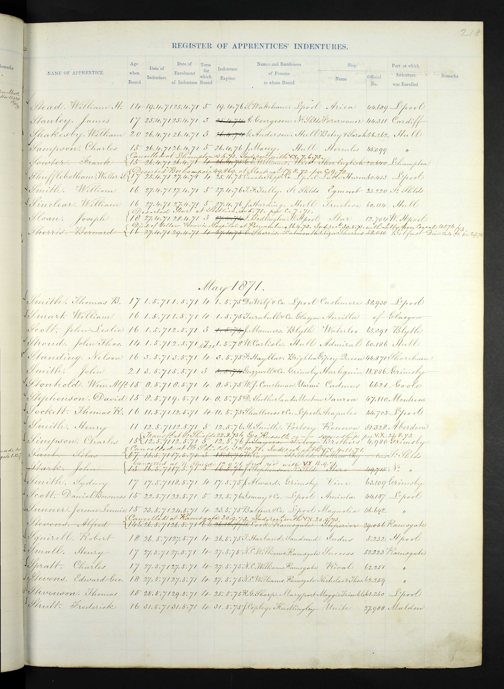
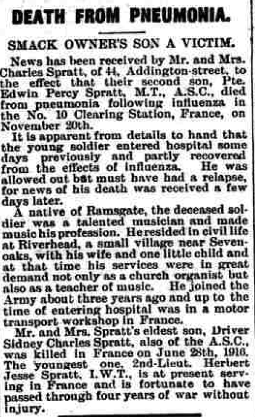
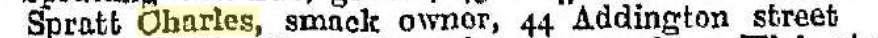
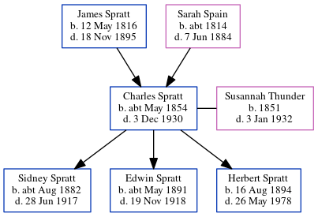

Charles Spratt cMay 1854 - 1930
[ Home ] | [ Calendar ] | [ Surnames Index ] | [ Errors ] | [ Family History ]A smack owner and fish salesman and uk merchant navy apprentice and the child of James Spratt (an agricultural labourer) and Sarah Spain, Charles Spratt, the great-great-uncle of Nigel Horne, was born in St Nicholas-at-Wade, Kent, England c. May 18541,2,3,4, was baptised there on 16 Jul 1854 and married Susannah Thunder (with whom he had 3 children: Sidney Charles James, Edwin Percy and Herbert Jesse) at St Martin, Herne, Kent, England on 3 Jul 18807.
During his life, he was living at The Row in St Nicholas-at-Wade on 7 Apr 18619; at Way, Minster, Thanet, Kent on 2 Apr 187112; in Ramsgate, Kent, England on 3 Apr 188113; at 44 Addington Street in Ramsgate in 18998, on 31 Mar 190110, on 2 Apr 191111, in 1913 and in 1918; and at Sidney Villa, Reculver Road, Herne Bay, Kent in 1930 which is where he died on 3 Dec 19305,6. He was buried at Eddington Cemetery, Herne Bay on 8 Dec 1930.
Parents
- James was born on 12 May 1816
- Sarah was born c. 1814
Children
- Sidney Charles James was born c. Aug 1882
- Edwin Percy was born c. May 1891
- Herbert Jesse was born on 16 Aug 1894
Citations
- 1861 England Census Online publication - Provo, UT, USA: The Generations Network, Inc., 2005.Original data - Census Returns of England and Wales, 1861. Kew, Surrey, England: The National Archives of the UK (TNA): Public Record Office (PRO), 1861. Data imaged from the National
- 1871 England Census Online publication - Provo, UT, USA: The Generations Network, Inc., 2004.Original data - Census Returns of England and Wales, 1871. Kew, Surrey, England: The National Archives of the UK (TNA): Public Record Office (PRO), 1871. Data imaged from the National
- England & Wales births 1837-2006 - Findmypast
- England & Wales, FreeBMD Birth Index, 1837-1915 Online publication - Provo, UT, USA: The Generations Network, Inc., 2006.Original data - General Register Office. England and Wales Civil Registration Indexes. London, England: General Register Office. © Crown copyright. Published by permission of the Cont
- England & Wales Government Probate Death Index 1858-2019 - Findmypast
- England & Wales deaths 1837-2007 - Findmypast
- Kent, Canterbury Archdeaconry marriages 1538-1928 - Findmypast
- 1899 Kelly's Directory
- 1861 England, Wales & Scotland Census - Findmypast (was age 7 and the son of the head of the household)
- 1901 England, Wales & Scotland Census - Findmypast (was age 48 and the head of the household)
- 1911 Census for England & Wales - Findmypast (was age 58 and the head of the household)
- 1871 England, Wales & Scotland Census - Findmypast (was age 17 and a boarder in the household)
- 1881 England, Wales & Scotland Census - Findmypast (was age 26)
Media
Charles Spratt - probate

Charles Spratt - Merchant Navy Apprentice

Thanet Advertiser 30 Nov 1918

Thanet Advertiser 12 Dec 1930

1913 Kelly's Kent Directory

1899 Kelly's Directory

England & Wales births 1837-2006 - BMD/B/1854/2/RZ/000497/029
England & Wales deaths 1837-2007 - BMD/D/1930/4/AZ/000865/073
Kent, Canterbury Archdeaconry marriages 1538-1928 - GBPRS/CANT/M/97017809/1
England Marriages 1538-1973 - R_848287489
England & Wales marriages 1837-2008 - BMD/M/1880/3/AZ/000251/064
1871 England, Wales & Scotland Census - GBC-1871-0014270782
England Births & Baptisms 1538-1975 - R_884661335
Kent Baptisms - GBPRS/CANT/B/96801618
England & Wales Government Probate Death Index 1858-2019 - GBOR/GOVPROBATE/C/1931-1931/00102764
1881 England, Wales & Scotland Census - GBC-1881-0004871606
Family Tree
Map
Generated by ged2site. Last updated on Jul 3, 2024
Known Issues
Burial date (8 Dec 1930) has no citations
Residence record for 1930 contains no citation
Residence record for 1918 contains no citation
Residence record for 1913 contains no citation
Listed in the residence for 3 Apr 1881, but spouse Susannah Thunder is not
Listed in the residence for 1899, but spouse Susannah Thunder is not
Listed in the residence for 1913, but spouse Susannah Thunder is not
Listed in the residence for 1918, but spouse Susannah Thunder is not
Listed in the residence for 1930, but spouse Susannah Thunder is not
Census information missing between Census UK 1881 and Census UK 1901